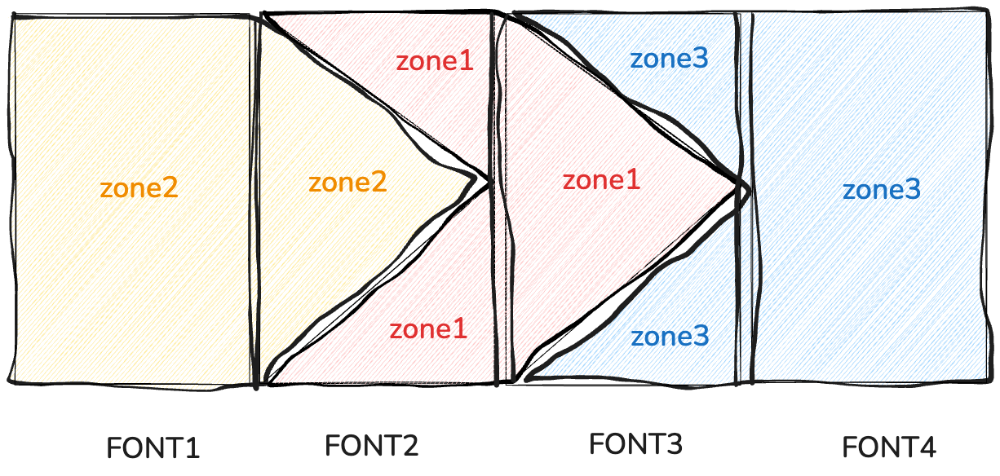
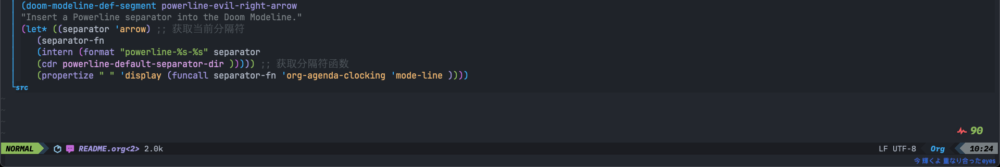

modeline readme
custom your modeline
Table of Contents
1. use powerline
Use powerline project separably style should import powerline package.
(package! powerline )

As you see, in fact power line just use special character to implement arrow style.It’s a bit complicated cause there used three color in four font and spread over three zone.font 1 and 4 is your modeline common segment which stands for evil state or buffer name etc.It’s essential that make sure segment’s background color correspond to the powerline’s color.Understand that you could custom your powerline separable symbol easily.
Here config the evil state and powerline arrow as you know we configed font 2 and 3. font 1 is the real evil state content. Font 4 is the next message.
(doom-modeline-def-segment powerline-evil-right "Insert a Powerline separator into the Doom Modeline." (let* ((separator 'arrow) ;; 获取当前分隔符 │ (separator-fn │ │ (intern │ │ (format "powerline-%s-%s" separator │ │ (cdr powerline-default-separator-dir))))) ;; 获取分隔符函数 │ │ │ (propertize " " 'display (funcall separator-fn │ │ (when (doom-modeline--active) │ │ (if (eq evil-state 'normal) 'powerline-evil-normal-state │ │ │ │ (if (eq evil-state 'insert) 'powerline-evil-insert-state │ │ │ │ (if (eq evil-state 'visual) 'powerline-evil-visual-state │ │ │ │ (if (eq evil-state 'replace) 'powerline-evil-replace-state │ │ │ │ (if (eq evil-state 'motion) 'powerline-evil-motion-state) │ │ │ │ 'powerline-evil-normal-state))))) 'org-agenda-clocking )))) │ │ │ │ (doom-modeline-def-segment powerline-evil-right-arrow "Insert a Powerline separator into the Doom Modeline." (let* ((separator 'arrow) ;; 获取当前分隔符 │ │(separator-fn │ │(intern (format "powerline-%s-%s" separator │ │(cdr powerline-default-separator-dir ))))) ;; 获取分隔符函数 │ │(propertize " " 'display (funcall separator-fn 'org-agenda-clocking 'mode-line ))))
make a left arrow use car (car powerline-default-separator-dir )
make a right arrow use cdr (cdr powerline-default-separator-dir )
final effect
